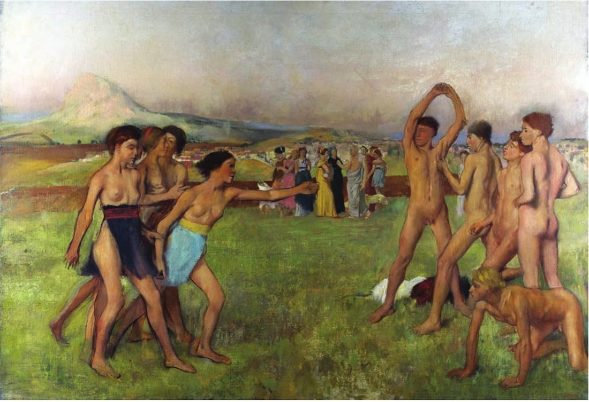
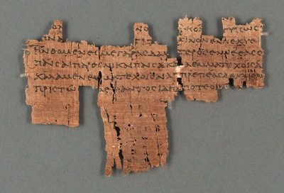
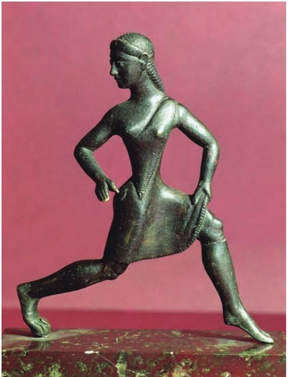
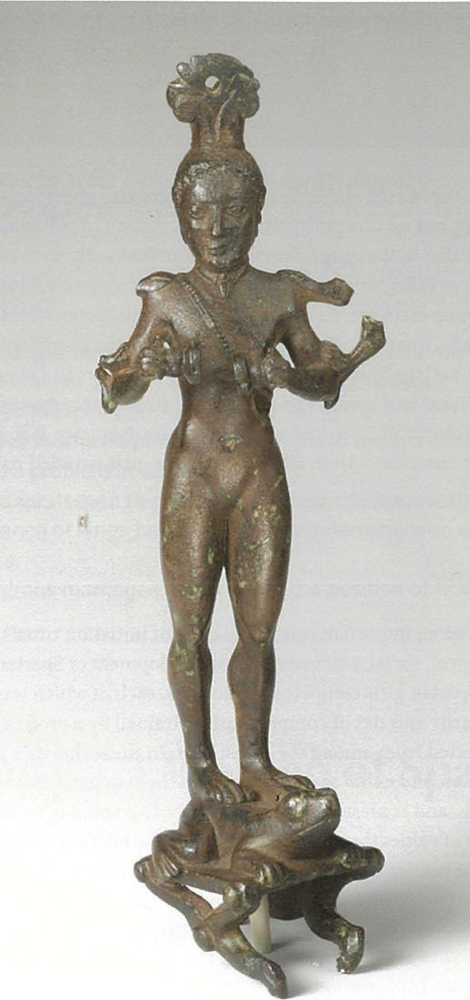

Spartan society to the Battle of Leuctra 371 BC · Lesson 13
Spartan women I: education, Alcman and festivals
Almost every word about Spartan girls was written by men, and most of it by outsiders. What do they say girls learned, and why? And what do a song Spartan girls sang, a bronze girl made in Laconia and a bronze mirror support add?
Year 12 Ancient History · Section II, Option G · Present with → or space · Read on a phone with R

Spaced review · 6 minutes · from memory, no notes
Five questions
- 1What was the krypteia?Lesson 12
- 2How does Plutarch’s version of the 2,000 helots differ from Thucydides’?Lesson 12
- 3What did Ducat claim about Spartan education?Lesson 10
- 4Which Athenian writer, given an estate by the Spartans, admired Sparta?A writer
- 5Who were the perioikoi?A term
- Selected young men sent into the countryside, who hid by day and, some sources say, killed helots by night: Plutarch, drawing on Aristotle, says so; Plato describes a test of endurance.
- In Thucydides the helots put themselves forward and about 2,000 were chosen, garlanded and never seen again; Plutarch has the Spartans pick out the bravest (Cooley’s note on D44).
- Education was “at the heart of Spartan ideology and practice”: it aimed to make citizens “as far as possible the same”.
- Xenophon (c. 430–c. 350 BC) — the author of today’s first source.
- Free people of at least 50 towns, almost all in Laconia: personally free, but without citizen rights at Sparta; they fought in the Lacedaemonian army (Cooley).
Lessons 9–12 followed the boys through their education and the men into the army and the messes. Today: the other half of the citizen population — what Spartan girls learned, and why.
Learning intentions and success criteria · 2 minutes
Today’s goals
- analyse what girls’ education and festival roles reveal about Spartan values
- synthesise written and archaeological evidence about Spartan girls
- explain the purpose Xenophon gives for girls’ training, and why he gives it
- describe what Alcman’s Maiden-song shows about girls’ choruses
- say what a bronze figure of a girl can and cannot show
- write a paragraph that combines Xenophon, Alcman and a bronze girl
A woman’s role is what she did; her status is her standing and rights. Today is mostly about roles: training, singing, taking part in festivals.
Note-making · today’s routine
How to structure your notes
questions and key terms
short phrases, arrows (→ led to), abbreviations (Xen. = Xenophon, Plut. = Plutarch)
- 1Listen and look firstDon’t copy while the slide is being explained.
- 2Write your own notes at each ✎ checkpointPhrases, not sentences. Arrows for cause and effect.
- 3Compare with the model notesThey appear one row at a time. Add what you missed in a second colour.
- 4Copy each cue question into the left columnLater, cover your notes and answer the cue questions from memory.
- 5Finish with a three-sentence summaryFive checkpoints: whose voices · educating girls · Alcman and festivals · bronze girls · putting it together.
Key vocabulary
Words you will use today
| Girls and festivals | Meaning |
|---|---|
| partheneion | a maiden-song: a song written for a chorus of girls to perform at a festival |
| chorus | a group who sang and danced together, usually in honour of a god |
| chorus leader | the girl who led a chorus; Alcman’s chorus praises its own |
| votive | an offering dedicated to a god |
| Hyakinthia | a three-day festival of Apollo and Hyacinthus at Amyklai, about 5–6 km south of Sparta |
| Gymnopaedia | (Cooley: Gymnopaidiai) a summer festival of choral dancing and endurance in the agora (Lesson 10) |
| Thinking about the evidence | Meaning |
|---|---|
| role | what a woman did: bearing and raising children, running a household, singing in choruses, serving the gods |
| status | a woman’s standing and rights, such as owning land (Lesson 14) |
| stereotype | a fixed, simplified picture of a group, often held by outsiders |
| eugenics | improving a population by controlling who has children |
| mirage | the idealised, distorted picture of Sparta in ancient and modern writing (Lesson 1) |
| synthesis | combining several sources, written and archaeological, into one judgement |
Spelling: Cooley’s translations use Greek forms (Alkman, Lykourgos, Lakedaimonians, Hyakinthia, Gymnopaidiai). In your own writing use Alcman, Lycurgus, Lacedaemonians, Hyakinthia (also spelt Hyacinthia) and Gymnopaedia.
1 · Whose voices? Stereotypes, roles and status · I do
Famous — and notorious
Cooley: Spartan women “were famous (and notorious) for being unusually independent and more ready to appear and speak in public than women elsewhere.”
Welcome Lakonian Lampito, my darling! / How beautiful you look, my sweetie! / And that complexion! And those rippling muscles of yours! / You could even throttle a bull.
Lampito: By the twin gods I’m sure I could; / I work out and do my squat-jumps.
Aristophanes, Lysistrata 79–84 (part) · Lysistrata greets Lampito · an Athenian comedy performed in 411 BC, during the war with Sparta · trans. K. Hughes · Cooley D66
Who is speaking, to whom, and when?
An Athenian playwright, to an Athenian audience at a festival, in 411 BC — in the middle of the war with Sparta. The words are his, not a Spartan woman’s.
What does the joke expect the audience to believe?
That Spartan women are muscular and athletic, and exercise. Cooley: Aristophanes “clearly found a useful source for laughs”.
So is a comedy any use as evidence?
Not for what Spartan women did, but for what Athenians expected: Cooley calls the play “particularly useful as a guide to Athenian stereotypes of Sparta in this period.”
1 · Whose voices? · I do — the stern Spartan mother
“Son, with it or on it”

Another woman, handing her son his shield, encouraged him with the words, “Son, with it or on it.”
Plutarch, Moralia 241F = Sayings of Spartan Women, ‘Unknown women’ 16 · collected c. AD 100 · trans. in Cooley F35
Why does Cooley call this famous saying “problematic”?
“dead Spartans were not carried back home at all, but buried where they fell”. The saying does not fit what Spartans did with their dead.
Then what are the sayings good for?
The ideal, not the record. Cooley: “The stories then are very little use as genuine historical record, but certainly create an excellent impression of the Spartan mirage.”
The 2024 marking guidelines: “Plutarch also records the ‘Sayings of Spartan Women’, a text which reveals non-Spartan stereotypes about Spartan women linked to the militaristic nature of society.”
1 · Whose voices? · I do — today’s sources, by who was speaking
Who tells us about Spartan girls?
| Source · when | Whose voice? | On girls |
|---|---|---|
| Alcman, Maiden-song (A14)late 7th century BC | inside Sparta a poet working at Sparta, probably Spartan; words for girls to sing | a chorus of ten girls at “our festival” |
| A bronze girl (D64)520–500 BC | made in Laconia maker unknown | a girl in a short dress, running or dancing |
| Aristophanes, Lysistrata (D66)411 BC | Athenian a comic playwright, in wartime | Lampito’s muscles: “I work out and do my squat-jumps” |
| Xenophon, Constitution (D68)probably late 390s or 380s BC | Athenian an admirer, given an estate by the Spartans | races and wrestling, for strong children |
| Plato, Protagoras (D72)Plato c. 429–347 BC | Athenian a philosopher | a speaker in his dialogue says Spartan women “think highly of education” |
| Polycrates on the Hyakinthia (C69)date unknown; quoted by Didymus (1st century BC) in Athenaeus (c. AD 200) | via later writers “presumably a Lakonian local historian” (Cooley) | girls in carriages and racing-chariots |
| Plutarch, Lykourgos 14–15, Sayings (D70, D71, F35)c. AD 100 | Roman period a Greek under Roman rule | discus and javelin; songs praising and mocking young men |
The pattern: every writer here is a man, and only Alcman (and perhaps Polycrates) wrote from inside Laconia — Cooley: “Our (non-Spartan) sources are very male orientated”. Women’s own words survive only in a few inscriptions, “the voices of a few, largely wealthy, women speaking in their own words” (Hodkinson; Cynisca, Lesson 14).
Check for understanding · point left for a role, right for status
Role or status?
Areas for students to improve include focusing on the roles of women rather than privileges or status (a)
- 1bearing and raising citizen sonsRole — what she did
- 2owning land in her own nameStatus — a right (Lesson 14)
- 3singing in a chorus at a festivalRole — Alcman’s girls
- 4being free to appear in publicStatus — her standing, compared with other Greek women
- 5running a household and estate while the men were at the mess or at warRole — what she did (Lesson 14)
- 6dedicating offerings to the godsRole — women dedicated at Orthia (section 3)
Notes checkpoint 1 of 5
Whose voices? Stereotypes, roles and status
Write your own notes first. Then compare, row by row, and add what you missed in a second colour.
2 · Educating girls: strong bodies for strong sons · I do — Source 10.1
Xenophon on the upbringing of girls
[3] To begin at the beginning: let us first consider the question of procreation. In other countries, young girls, who are the state’s future mothers and are thought to have been properly brought up, are nurtured on the most restricted diet possible and with a minimum of delicacies. They are forced to abstain from wine completely or else only to drink it diluted with water. The rest of the Greeks expect their girls to sit quietly at their spinning, in imitation of the sedentary existence of most craftsmen. But if women are brought up like that, how could anyone expect them to produce sturdy children? [4] As far as Lykourgos was concerned, there were enough female slaves to produce clothing, whereas the most important task for freeborn women was producing children. So as a first priority he laid it down that physical fitness was as important for women as for men. So he established women’s competitions in both running and wrestling, in the belief that the offspring of two strong parents would be all the more robust.
Xenophon, Constitution of the Lakedaimonians 1.3–4 · an Athenian, c. 430–c. 350 BC, writing probably in the late 390s or 380s BC · trans. B. Wilson · Cooley D68
What were girls elsewhere expected to do?
Sit quietly at their spinning, on a restricted diet, with little or no wine.
What did Spartan girls do instead?
Competitions in running and wrestling. Female slaves made the clothing.
What was a free woman’s most important task?
“producing children” — his starting point is “procreation”.
Why train girls at all?
Strong parents → strong children. The purpose is eugenic.
2 · Educating girls · I do — thinking aloud with O, V, P, R, L
How far can we trust Xenophon on girls?
| Code | The question I ask | My answer |
|---|---|---|
| O | A male Athenian admirer of Sparta: what access would he have had to Spartan girls? | He knew Sparta well — the Spartans gave him an estate, and he “may have lived in Sparta” (Cooley) — and girls exercised in public. But he writes as a male outsider: no Spartan woman speaks in his account. |
| V | What does he say girls did, and did not do? | Did: competitions in running and wrestling. Did not: sit spinning — “female slaves” made the clothing. |
| P | He begins with “procreation”. Why is he interested in girls at all? | As future mothers. His book is, in Cooley’s words, “a kind of political pamphlet, defending Sparta against its critics”, crediting the system to Lycurgus. |
| R | He builds a contrast with “other countries”. How might that exaggerate? | Every point is the opposite of other Greeks, so Sparta looks more different, and wiser, than it may have been. Cooley: the text “probably depicts a somewhat idealised Sparta”. |
| L | Which women are missing? | No girl or woman speaks. Nothing on music or festivals here. The “female slaves” (perhaps including helot women) appear only as clothing-makers. |
Xenophon’s is our fullest early prose account. The Athenian Critias (c. 460–403 BC), an admirer of Sparta writing a little earlier, already argued that “the mother of the child before its birth” should strengthen her body and exercise (Cooley D67, printed among Cooley’s sources on Spartan women).
2 · Educating girls · We do — two more witnesses
A later writer adds more
[14.2] For them, before puberty, he instituted a physically tough curriculum of running, wrestling, discus and javelin throwing, so that the products of their wombs should have a really strong start in a powerful body, and develop all the more strongly. … [14.3] Sometimes they in turn would poke fun and hurl good-natured abuse at anyone who got out of line; and by contrast they would also write hymns of praise and deliver them in honour of those who deserved it, thus encouraging competitiveness and an eagerness to excel in the young men themselves.
Plutarch, Life of Lykourgos 14.2–3 (part) · written c. AD 100 · trans. B. Wilson · Cooley D70
In these states [Sparta and Crete] it is not only the men who think highly of education, but also the women.
Plato, Protagoras 342d · Plato c. 429–347 BC · trans. in Cooley D72
What does Plutarch add to Xenophon?
Discus and javelin, and a public role: at festivals girls sang praise of brave young men and mocked those who “got out of line”.
Why handle him with care?
He wrote about five centuries after Xenophon, and Cooley warns that “much of his material also dates from after Sparta’s decline in the fourth century”.

2 · Educating girls · I do — two purposes
What was the training for?
Xenophon: so “the offspring of two strong parents would be all the more robust”. Plutarch: so the children “should have a really strong start in a powerful body”, and mothers would “better tolerate childbirth”.
Cooley adds: “a public education probably also ensured that the women fully subscribed to the community’s values.” Plutarch’s girls praised the brave and mocked the rest.
The training prepared girls for their roles as mothers of citizens and, Cooley suggests, as women who upheld Spartan values — not freedom for its own sake.
The 2025 marking guidelines: “Xenophon states that Lycurgus instituted physical training for women as much as men, as it was critical for Spartan women to be strong mothers and mothers of strong hoplites.” Xenophon himself speaks of “sturdy children” and robust offspring; “hoplites” is NESA’s gloss.
Check for understanding · hinge question · hold up 1–4 fingers
Which reason does Xenophon give for girls’ races and wrestling?
- 1So that women could defend the city when the men were at war
- 2So that two strong parents would have stronger children
- 3So that the girls would attract husbands
- 4So that they could dance in the choruses at festivals
2 — “in the belief that the offspring of two strong parents would be all the more robust” (Cooley D68). Option 3 is closer to Plutarch, who calls the girls’ processions and athletic competitions “in full view of the young men” incentives to marriage (D71).
Notes checkpoint 2 of 5
Educating girls: strong bodies for strong sons
3 · Singing for the gods: Alcman’s Maiden-song and girls at festivals · I do
Alcman: words from inside Sparta
Alcman: a “poet of the late-seventh century, BC, probably Spartan” (Cooley), who worked at Sparta. Cooley: “Apart from two poets of the seventh century BC, namely Tyrtaios and Alkman, we do not have any literary sources that originate from Sparta.”
A partheneion (maiden-song), sung by a chorus of girls. Cooley: Alcman “invented the genre of choral songs for performances of girls or young women”.
Copied onto a papyrus in the 1st century AD and found in Egypt in 1855: the Louvre Papyrus. It is damaged, with gaps.
One of very few sources from inside Sparta, and its words were sung by Spartan girls themselves.

3 · Alcman and festivals · We do — Source 10.2 · pairs
Alcman’s Maiden-song (Partheneion)
Unweeping; and so I sing / The radiance of Agido; / I see her like the sun, which / Agido summons to shine on us; / But our renowned chorus leader / In no way allows me either to praise, / Or to find fault with her; for she herself / Seems to be supreme, just as if / One were to put a horse among cattle, … For an abundance of purple / Is not enough to give any protection, / Nor an intricate snake of solid gold, / Nor yet a headband / From Lydia, the glory / Of dark-eyed girls, … For is not Hagesichora / With her pretty ankles present here, / And does she not stay near Agido / And praise our festival? … For they are goddesses, but this ten of ours / Sings as well as [eleven] girls; / And gives voice like a swan on the streams / Of Xanthos; and she with her lovely golden hair.
Alkman, fragment 1, lines 39–47, 64–69, 78–81 and 98–101 (Louvre Papyrus E3320, a 1st-century AD copy found in Egypt in 1855) · late 7th century BC · trans. K. Hughes · Cooley A14
Who sings?
A chorus of ten girls: “this ten of ours” (lines 98–99).
Who leads?
Their chorus leader, Hagesichora, whose name means ‘Leader of the chorus’. They also praise Agido, whose exact role is unclear.
What luxury goods appear?
Purple (probably cloth), a snake of solid gold (a bracelet or ornament), a headband from Lydia.
What is the occasion?
“our festival” — apparently a religious ceremony (Cooley), sung in public.
3 · Alcman and festivals · I do — weighing the song
What the Maiden-song shows — and what it cannot
Cooley: girls in choruses “needed some training in singing and performing poetry, and group rehearsals in preparation for specific occasions.” NESA’s 2025 guidelines list girls “educated in maiden songs”.
Purple, gold and a Lydian headband are far from the grim austerity of the Spartan mirage. Contrast a later writer: “Adornment has been banned for women in Lakedaimon” (Heraclides, Cooley D65).
Cooley: “In the classical period Spartan women were probably subject to the general restrictions on conspicuous consumption of wealth, e.g. strict rules on dress, jewellery or luxury items.” Alcman’s girls sang more than two centuries before Xenophon wrote.
The poem is a man’s words for a public ritual; the papyrus is damaged; Cooley says several elements “remain obscure” (it is not certain the chorus was competing). Which families did the singers come from? It does not say.
3 · Alcman and festivals · We do — girls in public at the great festivals
Girls at the Hyakinthia — and at Orthia
… the Lakedaimonians celebrate the festival of Hyakinthia over three days. … As for the maidens, some ride in richly decorated wicker carriages, some process in racing-chariots drawn by horses. The whole city is at a pitch of excitement and pleasure at the spectacle. … No one misses the festival – instead the city tends to be emptied for the spectacle.
Polykrates, Lakedaimonian Customs, as reported by Didymos (1st century BC) and quoted in Athenaeus, Scholars at Dinner 4.17 (Athenaeus flourished c. AD 200) · Polykrates’ date unknown · trans. in Cooley C69
Little lead figurines, humbler votives, celebrate the participants in festivals: hoplite warriors, female celebrants – perhaps members of choruses … and processions
W. G. Cavanagh, ‘Introduction to Lakonian Archaeology’, in M. G. L. Cooley (ed.), Sparta (2023). With S. Hodkinson, on Orthia: Aristomacha’s dedication to Eileithyia (Cooley C27; findspot unknown) “confirms the presence of female dedicators at the sanctuary, already inferred from the large number of bronze jewellery votives and numerous lead figurines depicting model looms …”.
What part did girls play at the Hyakinthia?
A public procession, in carriages and racing-chariots, before a city that “tends to be emptied for the spectacle”.
How close is this witness?
Not close: Polycrates is “otherwise unknown (presumably a Lakonian local historian)”, his date is unknown, and we read him through two later writers.

Festivals policed men too: Plutarch says unmarried men “were banned from being spectators at the Gymnopaidiai” (Lykourgos 15.1, Cooley D71; Lesson 10).
Notes checkpoint 3 of 5
Alcman’s Maiden-song and girls at festivals
4 · Bronze girls: what objects can and cannot show · We do — Source 10.3
A bronze girl from Laconia

Bronze figure of a girl. She may be running or, since she glances back, dancing. The bronze rivet surviving in the right foot perhaps suggests that this figure was originally a decorative fixture attached to a vessel or utensil. Produced in Lakonia, 520–500 BC, probably found at Prizren in Kosovo.
Bronze figure of a girl · height 114 mm · British Museum 1876,0510.1 · Cooley D64
Made in Laconia, probably found in Kosovo: what does that suggest?
Laconian bronzes travelled far from Sparta, perhaps by trade or as gifts.
Running or dancing? Which written sources fit each reading?
Running: Xenophon’s races (D68). Dancing: Alcman’s chorus (A14) and Plutarch’s girls at festivals (D70).
A decoration on a vessel: a real girl, or an ideal?
A craftsman’s figure: perhaps an ideal or a type, probably not a portrait of anyone.
Authentic and contemporary — so which details are less certain?
The findspot (“probably”), the purpose (“perhaps”) and what she is doing (“may be”).
4 · Bronze girls · I do — a second bronze, and the limits of objects
What can a bronze girl show?

| It can show | It cannot show |
|---|---|
| Laconian craftsmen made figures of girls in short dresses (and, if the mirror support is Spartan as Clarke & Garner say, nude) | whether any figure is a Spartiate girl, or which event she belongs to |
| an image consistent with girls’ races (Xenophon) and dances (Alcman) | whether the running girl is running or dancing |
| such images were wanted, as decorations on bronze objects | whether nudity records a custom or follows an artist’s convention |
Among the answers that could be included for “What do art and architecture reveal about cultural and everyday life in Sparta in this period?”: “Statuette of girl doing exercise, revealing the Spartan desire for fit and healthy women”.
Cooley says the best-known bronze girl “may be running or, since she glances back, dancing”: use NESA’s point, but keep the hedge.
Does the mirror support prove Plutarch’s naked processions?
No. Cooley says that “on some occasions they even appeared naked”, but a luxury mirror shows what an artist made, not a festival.
Check for understanding · hinge question · hold up 1–4 fingers
On its own, without any written source, the bronze girl shows that …
- 1Spartan girls ran races in short dresses
- 2a Laconian workshop made a figure of a girl in a short dress
- 3the girl was the daughter of a Spartiate
- 4girls danced at the Hyakinthia
2 — “Produced in Lakonia, 520–500 BC” (Cooley D64). The others need a written source, and even then the figure is only consistent with them, not proof.
Notes checkpoint 4 of 5
Bronze girls: what objects can and cannot show
5 · Putting it together · We do — written and archaeological evidence side by side
What does each kind of evidence add?
| Girls’ education | XenophonAthenian, prob. late 390s or 380s BC | Alcmanprob. Spartan, late 7th c. BC | The bronze girlLaconian, 520–500 BC | Plutarchc. AD 100 |
|---|---|---|---|---|
| Physical training | running and wrestling competitions | — | may be running: consistent, not proof | + discus and javelin |
| Song and dance in public | — (not in this passage) | a chorus of ten at “our festival” | may be dancing | songs at festivals, before young men |
| Purpose | strong children | shows the occasion, “our festival”, not a stated purpose | — (a decoration) | strong children, easier childbirth |
Xenophon’s claim that Lycurgus set up “women’s competitions in both running and wrestling” is consistent with the bronze girl from Laconia, who may be running or dancing, while Alcman’s “this ten of ours” shows that girls were also trained to sing for the gods.
The bronze girl confirms that Laconian craftsmen pictured girls in short dresses, but only Xenophon explains why girls trained: so that “the offspring of two strong parents would be all the more robust”.
5 · Putting it together · You do · 8 minutes · press K for the timer
Annotate Xenophon, Alcman and the bronze girl: O, V, P, R, L
- O male, Athenian, an admirer — access?
- V what girls did, and did not do
- P why begin with “procreation”?
- R the contrast with “other countries”
- L which women are missing?
- O why is a 7th-century song for girls unusual?
- V who sings, who leads, what occasion?
- P how does a public festival shape the words?
- R authentic, but which lines are obscure?
- L whose experience is missing?
- O made in Laconia, found in Kosovo?
- V running or dancing?
- P a decoration: real girl or ideal?
- R which details are uncertain?
- L a Spartiate? which event?
Xen.: O Athenian admirer, prob. late 390s/380s BC; knew Sparta, but a male outsider · V running + wrestling; not spinning · P strong mothers → robust children; praise of Lycurgus · R built as the opposite of “other countries” · L no woman speaks; “female slaves” only as clothing-makers. — Alcman: O late 7th c., prob. Spartan, words sung by girls · V chorus of ten; Hagesichora leads; “our festival” · P a public ritual: praise, finery · R authentic, but damaged and obscure in places · L a man’s words; which girls? — Bronze girl: O Laconian work, 520–500 BC, prob. found in Kosovo · V short dress; running or dancing · P perhaps a vessel fixture · R object authentic, meaning uncertain · L no name, no event.
Notes checkpoint 5 of 5
What girls’ education reveals about Spartan values
Finish your notes
Summary: three sentences
- Who tells us about Spartan girls, and why does that matter?
- What did girls learn, and what was it for?
- What do Alcman’s song and the bronze girls add — and what can they not show?
Almost everything written about Spartan girls comes from men, mostly Athenians such as Aristophanes and Xenophon or much later writers such as Plutarch, so their accounts often show outsiders’ stereotypes and ideals. Xenophon says Lycurgus set up competitions in running and wrestling so that strong parents would have strong children, Plutarch adds discus, javelin and songs at festivals, and Cooley suggests the education probably also made women share the city’s values. Alcman’s Maiden-song shows girls trained to sing for the gods at a festival, and bronze girls made in Laconia are consistent with races or dances, but the objects cannot say who the girls were or what they were doing.
6 · Answering HSC questions
An HSC-style question, written for this lesson
25 marks, about 45 minutes — about 1.8 minutes a mark. 6 marks ≈ 11 minutes.
NESA: “Relate cause and effect. Make the relationships between things evident. Provide why and/or how.”
Use both kinds of evidence, and say how they relate: what each shows, and what it cannot.
No HSC paper from 2019 to 2025 has asked a short question on girls’ education alone. The 2020 paper asked “Describe the role of women in this period” (5 marks): that is Lesson 14.
HSC-style, written for this lesson · Section II · 6 marks
Explain what written and archaeological evidence reveals about the education of Spartan girls in this period.
Not from a past paper. Take it apart, write it yourself, then check it against NESA’s 6-mark criteria and an annotated model.
HSC-style question · We do — deconstruct the question
What the question is really asking
NESA: “Relate cause and effect.” Say what each source shows and how it shows it — and why the girls were trained. A list of activities is a description.
Both kinds, named: Xenophon, Plutarch, Alcman; the bronze girl. Then relate them: supports, is consistent with, adds, cannot show.
Physical training and music, and its purposes: strong mothers, shared values, public roles at festivals. Girls, not boys or women’s property.
To 371 BC: lead with Alcman, the bronze girl and Xenophon. Plutarch wrote about AD 100 — label him as late.
About 11 minutes · a judgement first · at least one writer and one object, each named and dated · what the evidence cannot show · about 150–200 words.
HSC-style question · NESA’s 6-mark criteria and the markers’ feedback
What the markers reward
| Marks | Criteria (2025, part (b)) |
|---|---|
| 6 | Provides an informed explanation relevant to the question · Communicates effectively using appropriate historical terms and concepts |
| 5 | Provides an explanation relevant to the question · Communicates using appropriate historical terms and concepts |
| 4 | Provides some explanation relevant to the question · Communicates using some historical terms and concepts |
| 2–3 | Provides some information relevant to the question · May use some historical terms and/or concepts |
| 1 | Makes a general statement(s) relevant to the question |
In better responses, students were able to draw out different revelations about culture from a range of relevant Greek writers of different periods (b)
In better responses, students were able to use examples of specific art and architecture to draw revelations about cultural and everyday life (c)
integrating sources as evidence rather than relying solely on unsupported knowledge and understanding (b, c)
Source: NESA, 2025 HSC Ancient History Marking Guidelines, Section II part (b) — the criteria for a 6-mark “explain” question on a different topic (“Explain how the Spartans controlled the helots”) — and the 2020 and 2022 marking feedback for Question 11, quoted exactly.
HSC-style question · You do · 16 minutes · press K for the timer
Explain what written and archaeological evidence reveals about the education of Spartan girls in this period. (6 marks)
- a judgement in your first sentence
- Xenophon and Alcman, named and dated
- the bronze girl, and what it cannot show
- at least one “This Does That” sentence linking two sources
- about 150–200 words
Start: “Written and archaeological evidence together suggest that Spartan girls were educated to …, although …”
Link: “Xenophon’s claim that … is consistent with the bronze girl, which …, while Alcman’s song shows …”
HSC-style question · Check your answer — a model written for this lesson
Source → what it shows → why, then the limits
Model written for this lesson · about 200 words, about 11 minutes
Marker’s margin
HSC-style question · three answers that fall short
Why answers drop marks
Spartan girls ran, wrestled and threw the javelin. They sang in choruses at festivals and rode in chariots at the Hyakinthia. They were fitter than other Greek girls.
Accurate information, but no sources, no purpose and no archaeology: it never says what the evidence reveals.
Xenophon says Lycurgus set up races and wrestling for girls so that strong parents would have strong children. Plutarch adds that they threw the discus and javelin …
A real explanation of purpose, but no archaeological evidence, and Plutarch is not dated.
The bronze statue of a running girl proves that Spartan girls ran races in short tunics, exactly as Xenophon says.
Cooley says she “may be running or, since she glances back, dancing”, and Xenophon says nothing of dress. An object is consistent with a text; it does not prove it.
Written for this lesson to show the marking criteria — not real student answers.
HSC-style question · Self-mark
Mark your own answer
Fewer than five ticks? Add the missing move in a second colour.
Outline the roles of Spartan girls in religious festivals. (4 marks)
To what extent did the education of Spartan girls differ from that of girls elsewhere in Greece? (10 marks)
Underline every source you named. Circle every “so”, “because” or “consistent with”. Underlines without circles are a list, not an explanation.
Practice and review · 1 of 6 · sequencing · written for this lesson
Put the evidence in order, earliest first — and say whose voice each is
For each, write: inside Laconia, Athenian outsider, later writer, or modern.
- APlutarch writes his Life of Lycurgus, with girls throwing the discus and javelin
- BAlcman composes a maiden-song for a chorus of ten girls
- CA bronze mirror support in the shape of a nude girl is made
- DThe bronze girl now in the British Museum is made in Laconia
- EAristophanes puts Lampito on the Athenian stage in the Lysistrata
- FXenophon writes that Lycurgus set up races and wrestling for girls
- GAthenaeus preserves Polycrates’ account of the girls’ procession at the Hyakinthia
- HLe Barbier paints a Spartan mother handing her son his shield
- 1 · B (late 7th century BC) — inside Laconia: Alcman, probably Spartan.
- 2 · C (c. 540–530 BC, Clarke & Garner) — inside Laconia, if Spartan as the textbook says.
- 3 · D (520–500 BC) — inside Laconia: a Laconian workshop.
- 4 · E (411 BC) — Athenian outsider, in wartime.
- 5 · F (probably late 390s or 380s BC) — Athenian outsider, an admirer.
- 6 · A (c. AD 100) — later writer, under Roman rule.
- 7 · G (Athenaeus c. AD 200; Polycrates’ own date unknown) — later writer, preserving a presumably Laconian one.
- 8 · H (early 19th century) — modern: a picture of the ideal, not evidence.
Practice and review · 2 of 6 · true, false, justify · written for this lesson
True or false? Justify with a source
- 1Aristophanes, an Athenian, put a Spartan woman called Lampito on stage in 411 BC. True — Lysistrata 79–84, performed 411 BC (Cooley D66).
- 2Cooley treats “Son, with it or on it” as good evidence of what Spartans did with their dead. False — it is “quite problematic as dead Spartans were not carried back home at all, but buried where they fell” (note on F35).
- 3Xenophon says Spartan girls competed in running and wrestling. True — “women’s competitions in both running and wrestling” (D68).
- 4Plutarch says girls threw the discus and javelin. True — “running, wrestling, discus and javelin throwing”, before puberty (Lykourgos 14.2, D70).
- 5Alcman’s Maiden-song was sung by a chorus of eleven girls. False — “this ten of ours / Sings as well as [eleven] girls”: a chorus of ten (Cooley’s note on A14).
- 6The Maiden-song mentions purple and gold. True — “an abundance of purple”, “an intricate snake of solid gold” (A14).
- 7Polycrates says girls rode in carriages and racing-chariots at the Hyakinthia. True — “some ride in richly decorated wicker carriages, some process in racing-chariots drawn by horses” (C69) — preserved by later writers.
- 8The bronze girl in the British Museum was found at Sparta. False — made in Laconia, but “probably found at Prizren in Kosovo” (D64).
Practice and review · 3 of 6 · cloze · Chapter 10 Activity C, items 1–3, and five written for this lesson
Fill the gaps
- Xenophon says Spartan girls competed in running and wrestling.
- A song for a chorus of girls is called a partheneion.
- In Alcman’s poem, the chorus leader whose name means ‘Leader of the chorus’ is Hagesichora.
- Aristophanes put a Spartan woman called Lampito on the Athenian stage in 411 BC.
- Plutarch says girls also threw the discus and the javelin.
- Cooley suggests a second purpose: a public education probably made women share the community’s values.
- At the Hyakinthia, held at Amyklai, some girls rode in carriages and racing-chariots.
- The bronze girl in the British Museum was made in Laconia but probably found in Kosovo.
Practice and review · 4 of 6 · write an analytical paragraph · written for this lesson
How useful is Alcman’s Maiden-song as evidence for the lives of Spartan girls?
Alcman’s Maiden-song is highly useful for the public, religious side of girls’ lives, but much less so for their everyday lives. Composed in the late 7th century BC by a poet who was probably Spartan, it was written for ‘this ten of ours’ to sing at what the girls call ‘our festival’, so its words were sung by Spartan girls themselves. It shows girls trained to perform as a chorus, praising their chorus leader, Hagesichora, and Agido, and admiring ‘an abundance of purple’ and ‘an intricate snake of solid gold’, a picture far from the austerity of later writers. Yet the words were written by a man for a public ritual, so they show how girls were meant to appear before the city rather than how they lived; the papyrus is damaged, Cooley warns that several elements ‘remain obscure’, and we cannot tell which families the singers came from. Even so, as one of the two longest surviving fragments of Alcman, both written for girls’ choruses, it tells us more about girls’ choruses than any Athenian account, though it says nothing of their athletic training.
Practice and review · 5 of 6 · extended response · Chapter 10 Activity E
To what extent were the roles of Spartan women shaped by the needs of the state? (15 marks)
Use evidence from relevant sources. Plan it in four moves (Lesson 14 completes the evidence):
- Thesis in your first sentence, responding to Cooley’s judgement that “Spartan women’s status within society was indeed different from that in most other Greek states”.
- Education and marriage for strong citizens: Xenophon’s races and wrestling (Cooley D68), Plutarch’s curriculum (D70); marriage customs (D68, D71: Lesson 14).
- Public and religious roles: Alcman’s chorus (A14), the Hyakinthia (C69), dedications at Orthia (Hodkinson in Cooley); the priestess question (B35: Lesson 14).
- Property, influence and Cynisca: Aristotle (D69, D54) and Herodotus (D8) in Lesson 14 — weighing Athenian stereotypes (Aristophanes, D66) and how few women’s own voices survive.
Practice and review · 6 of 6 · the Quick Checks for sections 2 and 4, with answers written for this lesson
Quick Check review
- What did Xenophon say girls elsewhere in Greece were expected to do? “sit quietly at their spinning”, on “the most restricted diet possible”, drinking little or no wine (D68).
- Name two physical activities of Spartan girls and the writer who mentions each. Running and wrestling (Xenophon, D68); discus and javelin (Plutarch, Lykourgos 14.2, D70).
- What purpose do Xenophon and Plutarch give for girls’ training? Strong mothers would bear strong children; Plutarch adds that mothers would “better tolerate childbirth”.
- What second purpose does Cooley suggest? “a public education probably also ensured that the women fully subscribed to the community’s values.”
- Who were Agido and Hagesichora, according to the Maiden-song? Girls the chorus praises: Hagesichora, whose name means ‘Leader of the chorus’, leads it; Agido is praised for her radiance “like the sun”, but her exact role is unclear.
- Which details in Source 10.2 challenge the idea of Spartan austerity? “an abundance of purple”, “an intricate snake of solid gold” and a headband “From Lydia” — against the later claim that adornment was banned (D65).
- What part did girls play at the Hyakinthia? They processed in public, some in decorated wicker carriages, some in racing-chariots (Polycrates, C69).
- Give one thing the bronze girl supports in the written sources, and one thing it cannot tell us. Her active pose is consistent with girls running (Xenophon) or dancing (Alcman, Plutarch); it cannot tell us who she was, which event she belongs to, or whether she is running or dancing.
Exit ticket · before you leave
Written v. archaeological evidence
One thing the written sources say about girls that the bronze figure supports.
One thing the bronze figure cannot show.
Next lesson: Spartan women II — land, inheritance and marriage, Cynisca’s Olympic victory, and a priestess or a mother on the grave.
Sources and credits
Where everything comes from
Quoted from the translations in M. G. L. Cooley (ed.), Sparta, LACTOR Sourcebooks in Ancient History 21, 2nd edn (Cambridge University Press, 2023): Xenophon, Constitution of the Lakedaimonians 1.3–4 (D68, trans. B. Wilson); Plutarch, Life of Lykourgos 14.2–3 and 15.1 (D70, D71, trans. B. Wilson) and Moralia 241F, Sayings of Spartan Women (F35); Plato, Protagoras 342d (D72); Aristophanes, Lysistrata 79–84 (D66, trans. K. Hughes); Alcman, fragment 1 = Louvre Papyrus E3320 (A14, trans. K. Hughes); Polykrates in Athenaeus, Scholars at Dinner 4.17 (C69); Xenophon, Hellenika 4.5.11 (C70); Herakleides Pontikos, Constitution of the Lakedaimonians 2.8 (D65); Kritias fr. 32 (D67); Suda, Lexicon ‘Alkman’ (A13); Aristotle, Politics 1269b12–1270a15 (D69); bronze figure of a girl, British Museum 1876,0510.1 (D64). Cooley’s introductions to the literary sources (Alcman, Aristophanes, Xenophon, Plato, Plutarch, Athenaeus), to Sparta’s poetry and to Alcman (A13–A20), to women (D64–D72, pp. 122–123), to education (D73–D81) and to Spartan women (E78–E81), the festivals and the Hyakinthia, the perioikoi and the Spartan sayings, and his notes on A14, C69, D44 and F35; S. Hodkinson, ‘Introduction to the Epigraphy of Lakonia and Messenia’ (pp. 17–18), and W. G. Cavanagh, ‘Introduction to Lakonian Archaeology’, both in Cooley.
Marking criteria (2025 Section II part (b)); “answers could include” points (2025 part (c), 2024 part (d), 2022 part (c)); marking feedback for Question 11 (2020 parts (a)–(c), 2022 part (c)); HSC 2020 Q11(a), 2022 Q11(c) and 2025 Q11(b) wording; the Ducat interpretation printed with 2025 Q11(c): NSW Education Standards Authority, HSC Ancient History examinations, marking guidelines and feedback. © NESA. NESA glossary of key words for “explain”. The HSC-style questions were written for this lesson.
- The site of the sanctuary of Apollo at Amyklai — Clarke & Garner, Fig 7.7
- A modern painting: Le Barbier’s early 19th-century picture of a Spartan woman handing her son his shield — the ‘with it or on it’ story, not ancient evidence — Clarke & Garner, Fig 5.3
- A modern painting: Edgar Degas’ 19th-century ‘Young Spartans’, imagining girls and boys training together — how later Europeans pictured Sparta, not ancient evidence — Bradley, Fig 3.16
- A papyrus fragment of one of Alcman’s maiden-songs (Hurley et al.), shown to illustrate a papyrus; our extract comes from the Louvre Papyrus E3320 — Hurley et al., Source 56
- Brooches and dress pins of bronze, silver and bone found at the Sanctuary of Artemis Orthia — Clarke & Garner, Fig 5.2
- Bronze figure of a girl in a short dress, one leg stretched far forward; made in Laconia, 520–500 BC, probably found at Prizren in Kosovo (British Museum 1876,0510.1) — Bradley, Fig 3.15
- A bronze mirror support in the shape of a nude girl, c. 540–530 BC, which Clarke & Garner describe as Spartan — an ancient artefact — Clarke & Garner, Fig 5.10
Books: Clarke & Garner, Spartan society textbook (school copy); P. Bradley, The Ancient World Transformed (Cambridge University Press, 2014); Hurley et al., Antiquity 2, 4th edn (Oxford University Press, 2019).
Textbook images are reproduced for teaching, with the source given under each one. The tables in this lesson were drawn for it from Cooley.